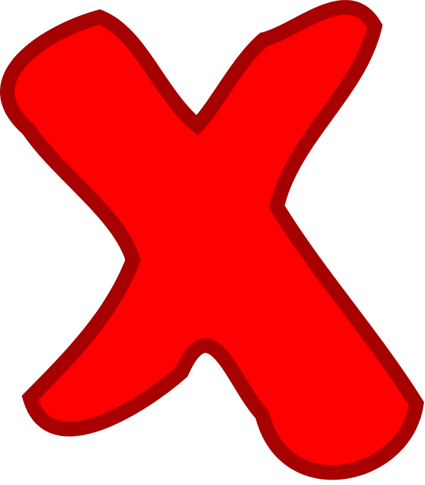

<!--
  Generated template for the WrongPage page.

  See http://ionicframework.com/docs/components/#navigation for more info on
  Ionic pages and navigation.
-->
<ion-header>

  <ion-navbar>
    <ion-title>Wrong Answer</ion-title>
  </ion-navbar>

</ion-header>


<ion-content padding>

  <h2> Try Again with the same word:</h2>
  <h2> {{ wrong }} </h2>

  


</ion-content>
